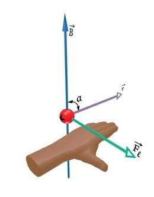

Lorentzi jõud ja induktsioonivool
Lorentzi jõud
Magnetväljas liikuvale laetud osakesele mõjuvat jõudu nimetatakse Lorentzi jõuks.
Teame, et juhtmelõigule, mille pikkus on \(l\) ja milles kulgeb vool tugevusega \(I\),
mõjub magnetväljas induktsiooniga \(B\) magnetjõud \(Fm\).
\(Fm = BIl \sin \alpha \) (Ampère’i seadus).
Tegelikult summeerub jõud Ampère'i seaduses üksikutele liikuvatele laengukandjatele mõjuvatest Lorentzi
jõududest. Laengut \(q\) omavale ja kiirusega \(v\)
liikuvale osakesele mõjub magnetväljas induktsiooniga
\(B\) Lorentzi jõud \(Fl = qvB \sin \alpha\), kus \(\alpha\) on nurk osakese liikumissuuna (kiirusvektori)
\(a\) magnetvälja suuna (\(B\)-vektori) vahel.

Positiivse laenguga osakestele mõjuva Lorentzi jõu suuna võib seega samuti
määrata vasaku käe reegli abil, mis antud juhul kõlab järgmiselt:
Kui vasaku käe väljasirutatud sõrmed näitavad positiivselt laetud osakese liikumise suunda ja magnetvälja jõujooned tulevad peopessa,
siis väljasirutatud pöial näitab osakesele mõjuva Lorentzi jõu suunda
Elektroni kui negatiivselt laetud osakese korral on Lorentzi jõu suund eelnevale vastupidine, seega jõu suunda näitab analoogiliselt paikneva parema käe pöial. Lorentzi jõud on suunatud alati risti nii liikumise suunaga kui ka magnetvälja suunaga.
Vaata animatsiooni Lorentzi jõust
Fun fact: Lorentzi jõud on põhjuseks, miks virmalised on sellise kujuga.
Induktsioonivool
 Nüüd uurime mähisekeeru lõiku ab, mis liigub ülespoole masina võlli päripäeva pöörava välisjõu toimel.
Positiivsed laengukandjad hakkavad vaadeldavas juhtmekeerus Lorentzi jõu mõjul liikuma suunas \(a \rightarrow b \rightarrow c \rightarrow d\). Juhtme
liikumine magnetväljas tekitab juhtmes induktsioonivoolu. Nähtust võib kokkuvõtlikult kirjeldada
kujul:
Nüüd uurime mähisekeeru lõiku ab, mis liigub ülespoole masina võlli päripäeva pöörava välisjõu toimel.
Positiivsed laengukandjad hakkavad vaadeldavas juhtmekeerus Lorentzi jõu mõjul liikuma suunas \(a \rightarrow b \rightarrow c \rightarrow d\). Juhtme
liikumine magnetväljas tekitab juhtmes induktsioonivoolu. Nähtust võib kokkuvõtlikult kirjeldada
kujul:
magnetväli + liikumine \(\rightarrow\) elektrivool. Nähtust, kus magnetvälja muutumine tekitab elektrivoolu,
nimetatakse
elektromagnetilise induktsiooni nähtuseks. Kirjeldatud masinat nimetatakse generaatoriks.